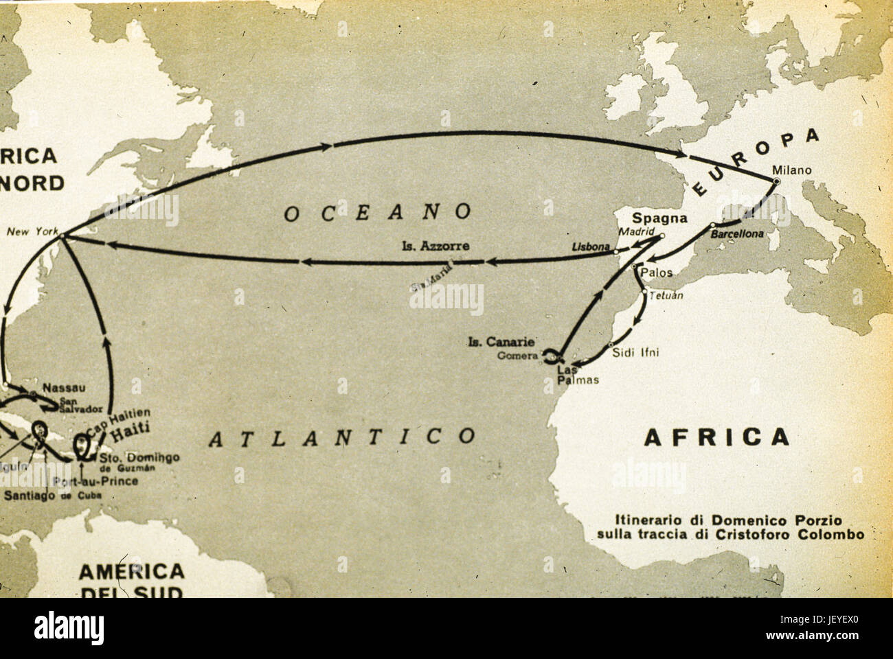

Cristoforo Colombo
Il navigatore che cercò il Levante navigando verso il Ponente, cambiando per sempre il destino di due civiltà.
A cura di: Federico VitaleIl Progetto: "Buscar el Levante por el Ponente"
Nel tardo XV secolo, con le tradizionali vie di terra per l'Asia saldamente in mano all'Impero Ottomano, i prezzi delle spezie e della seta erano astronomici. Cristoforo Colombo, marinaio genovese ossessionato dalle mappe, concepì un piano folle ma logico: raggiungere l'Oriente navigando verso Occidente.
Egli basava i suoi calcoli sui trattati dello scienziato Paolo dal Pozzo Toscanelli. Tuttavia, commise un errore sistematico gigantesco: sottovalutò la circonferenza terrestre di quasi un terzo e ignorò completamente l'esistenza di un intero continente in mezzo all'oceano.
La Flotta del Destino (1492)
Rifiutato dal Portogallo, Colombo trovò ascolto presso la regina Isabella di Castiglia. Il 3 agosto 1492, tre piccole navi — la Santa Maria (una caracca), la Pinta e la Niña (due agili caravelle) — lasciarono il porto di Palos de la Frontera.

Cronaca del Giorno Storico
Dopo oltre due mesi di navigazione nel vuoto assoluto, con un equipaggio terrorizzato e sull'orlo dell'ammutinamento, il 12 ottobre 1492 il marinaio Rodrigo de Triana avvistò finalmente la costa. Colombo sbarcò a San Salvador, convinto fino al giorno della sua morte di aver toccato le isole dell'estremo Giappone.
L'Esplorazione del Sistema Caraibico
Colombo non si fermò al primo viaggio. Tra il 1492 e il 1504 guidò ben quattro spedizioni oceaniche contando ben 17 navi e 1500 uomini neò secondo viaggio, mappando Cuba, Haiti (Hispaniola), la Giamaica e le paludi della costa dell'America Centrale. Nonostante l'oro trovato non fosse quello descritto da Marco Polo nelle Indie, l'impatto ecologico, biologico e commerciale di questi viaggi cambiò l'economia planetaria.è importante sapere che durante il 3 viaggio Molti accusavano Colombo di governare in modo autoritario e inefficiente. I coloni protestavano per la scarsità di ricchezze trovate, per le difficoltà economiche e per le punizioni severe imposte dal governatore. Inoltre vi furono tensioni e violenze nei confronti delle popolazioni indigene. Per questo motivo la corona spagnola inviò un funzionario reale per controllare la situazione. Colombo venne accusato di malgoverno, arrestato nel 1500 e riportato in Spagna in catene.
L'Ingegneria Navale: Il Segreto della Caravella
Senza l'innovazione tecnologica portoghese, il viaggio sarebbe stato un suicidio. La caravella era lo stato dell'arte dell'ingegneria navale rinascimentale: uno scafo leggero a pescaggio ridotto, perfetto per esplorare coste e fondali sconosciuti senza arenarsi.Le caravelle avevano caratteristiche molto diverse rispetto alle navi medievali: scafo leggero e slanciato, che permetteva una navigazione più veloce; pescaggio ridotto, cioè una profondità minore, utile per avvicinarsi alle coste senza incagliarsi; due o tre alberi con vele di diverso tipo; equipaggio relativamente ridotto, generalmente tra 20 e 30 uomini.
Il vero segreto risiedeva nella velatura mista. Le vele quadrate sul trinchetto garantivano la massima spinta con il vento in poppa negli oceani aperto, mentre la vela latina (triangolare) sulla mezzana permetteva la manovra del bolinare, ovvero navigare con un angolo favorevole anche controvento.
La Niña era una caravella con vele latine, considerata stabile e affidabile. Durante il viaggio vennero aggiunte anche vele quadrate per aumentare la velocità nelle traversate oceaniche.
La Pinta era la più veloce delle tre navi. Grazie alle vele quadrate poteva raggiungere elevate velocità con vento favorevole. Fu proprio da questa nave che venne avvistata per prima la terra il 12 ottobre 1492
La Santa Maria non era una caravella ma una nau, cioè una nave più grande e pesante. Era più lenta e meno maneggevole, ma aveva maggiore capacità di carico. Serviva soprattutto per trasportare provviste ed era la nave ammiraglia della spedizione.
Le caravelle avevano anche diversi limiti: poco spazio a bordo, che rendeva difficili le condizioni di vita dei marinai; scarse provviste, con cibo che spesso si deteriorava durante il viaggio; difesa limitata, poiché non erano vere navi da guerra. Questa debolezza le rendeva vulnerabili agli attacchi di pirati, nemici o tempeste oceaniche. Nonostante ciò, per l’epoca rappresentavano il mezzo più avanzato disponibile per le esplorazioni.
La Tecnologia di Bordo
I navigatori dell'era delle scoperte dovevano mappare il nulla. Gli strumenti principali includevano:
- La bussola magnetica: Racchiusa nella chiesuola, indicava costantemente il nord magnetico, sebbene influenzata dalla declinazione.
- L'astrolabio nautico e il quadrante: Strumenti pesanti in ottone usati per misurare l'altezza del sole a mezzogiorno o della Stella Polare, determinando così la latitudine della nave.
Il Dramma della Navigazione Stimata
Se la latitudine era calcolabile, la **longitudine** (la posizione sull'asse Est-Ovest) era un mistero insolubile. I marinai si affidavano alla "navigazione stimata": il capitano lanciava un pezzo di legno a prua e calcolava il tempo che impiegava a raggiungere la poppa per stimare la velocità dei nodi. Questo metodo empirico esponeva le flotte a tragici errori causati dalle correnti sottomarine invisibili.